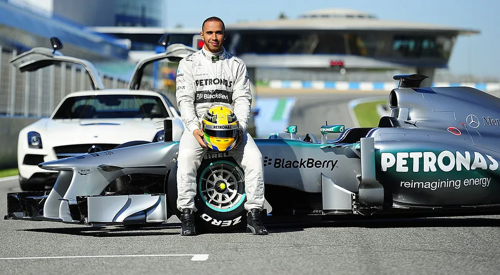
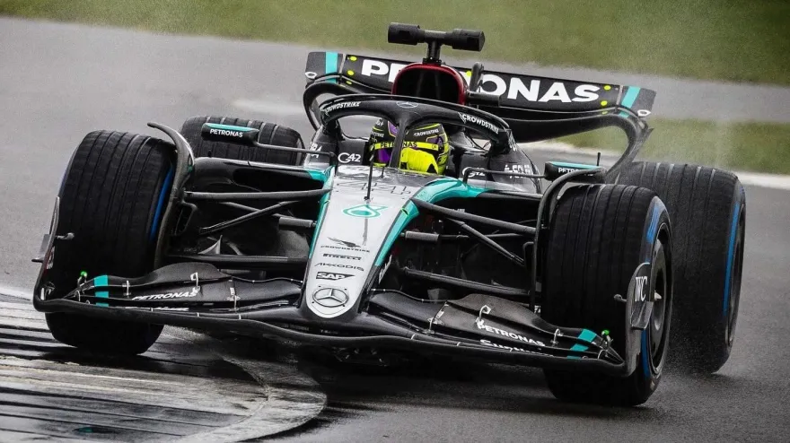
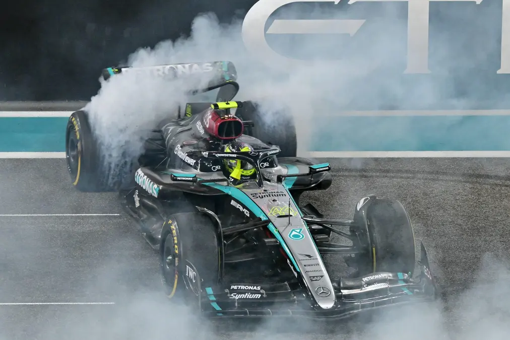

Carreira
Base

Em 1995, durante uma cerimônia de premiação do automobilismo em Londres, um garoto de 10 anos vestindo terno emprestado e sapatos formais chamou a atenção de uma das figuras mais influentes da Fórmula 1. Campeão de kart naquela temporada, Lewis Hamilton subiu ao palco para receber dois troféus e, em seguida, se dirigiu com confiança a Ron Dennis, então chefe da equipe McLaren-Mercedes.
Com um livro de autógrafos preparado por seu pai, Hamilton se apresentou: “Olá, Sr. Dennis. Sou Lewis Hamilton e um dia gostaria de correr pela sua equipe.” O executivo assinou o livro, anotou seu número de telefone e, com visão profética, escreveu: “Ligue-me daqui a nove anos.”
Mas a resposta veio muito antes. Apenas três anos depois, o telefone da casa dos Hamilton tocou — e do outro lado da linha estava Ron Dennis. A proposta era concreta: a McLaren ofereceria apoio financeiro ao desenvolvimento da carreira de Lewis, desde que ele mantivesse o desempenho escolar. “Simplesmente subi para o meu quarto e continuei com meu dever de casa. Era inacreditável. Tive dificuldade para absorver aquilo”, relembra o piloto.
O respaldo financeiro encerrou as dificuldades econômicas da família, mas também aumentou a pressão sobre o jovem talento. Agora, além de lidar com expectativas altíssimas, Hamilton precisava provar, corrida após corrida, que era merecedor do investimento feito por uma das principais equipes da Fórmula 1. As críticas muitas vezes enviesadas o acusavam de ter a obrigação de vencer, dado o suporte que recebia. Em resposta, Lewis acelerava.
Entre 1996 e 2001, conquistou oito campeonatos de kart, demonstrando talento e consistência. Sua ascensão prosseguiu nos monopostos, onde brilhou em categorias de base, incluindo o prestigioso título da GP2 em 2006, vencendo cinco das 21 corridas da temporada. Mais do que os resultados, foram suas atuações ousadas como largadas do fim do grid seguidas por subidas impressionantes até o pódio que convenceram a McLaren a promovê-lo à Fórmula 1.
Início meteórico na F1

A estreia de Lewis Hamilton na Fórmula 1, em 2007, foi um verdadeiro espetáculo. O novato britânico rapidamente se estabeleceu como uma força dominante na pista, trazendo um raro brilho a uma temporada turbulenta para a McLaren. No entanto, seu desempenho avassalador também alimentou tensões internas na equipe.
Hamilton dividiu os boxes com o bicampeão mundial Fernando Alonso, cuja relação com o time deteriorou-se rapidamente. O espanhol se ressentia da atenção dada ao estreante inglês e via no jovem piloto uma ameaça direta ao seu status. A rivalidade entre os dois atingiu níveis críticos, agravando uma situação já delicada para a equipe britânica, que enfrentava um dos escândalos mais polêmicos da história da Fórmula 1: o caso de espionagem industrial envolvendo informações técnicas sigilosas da Ferrari. Como punição, a McLaren foi multada em US$ 100 milhões e desclassificada do Campeonato de Construtores — que provavelmente teria vencido.
Com a saída de Alonso no fim do ano e seu retorno à Renault, Hamilton assumiu o papel de líder da equipe em 2008. A pressão aumentava, e o jovem talento passou a ser alvo constante de críticas e controvérsias. Apesar de conquistar cinco vitórias e subir ao pódio em outras seis ocasiões, sua pilotagem agressiva gerou reações negativas entre alguns rivais, que o acusaram de arrogância e imprudência nas ultrapassagens. Hamilton, por sua vez, defendia seu estilo como competitivo, mas justo, atribuindo as críticas à má interpretação de sua autoconfiança.
O campeonato daquele ano foi marcado por altos e baixos, e a decisão ficou para a última corrida da temporada, no Grande Prêmio do Brasil. No circuito de Interlagos, em São Paulo, as chances de título eram reais — mas frágeis. Para garantir o campeonato, Hamilton precisava terminar, no mínimo, em quinto lugar. Do outro lado, o brasileiro Felipe Massa, correndo em casa pela Ferrari, venceria o título se conquistasse a vitória e o rival britânico não alcançasse a posição necessária.
O desfecho foi digno de cinema. Sob chuva, em uma pista traiçoeira, Massa fez tudo certo: venceu a prova e, por instantes, parecia ter se consagrado campeão mundial. Mas, nos 38,9 segundos que se seguiram após sua vitória, o impensável aconteceu. Na última curva da última volta, Hamilton ultrapassou Timo Glock que enfrentava dificuldades com pneus de pista seca — e garantiu o quinto lugar que precisava. Aos 23 anos e 300 dias, tornou-se o mais jovem Campeão Mundial da Fórmula 1 até então, encerrando uma das temporadas mais emocionantes da história do esporte.
A era Mercedes de Lewis Hamilton: uma parceria histórica que moldou a Fórmula 1 moderna

Quando Lewis Hamilton anunciou sua surpreendente saída da McLaren para se juntar à Mercedes, no final de 2012, muitos viram a decisão como um passo arriscado. À época, a equipe alemã era vista como intermediária no grid, com desempenho inconsistente e sem grandes resultados desde seu retorno à Fórmula 1 como equipe oficial em 2010. Poucos poderiam prever que aquela parceria se tornaria uma das mais dominantes da história do esporte.
Hamilton fez sua estreia pela Mercedes em 2013, substituindo Michael Schumacher. O primeiro ano foi de adaptação, tanto para o piloto quanto para a equipe, que ainda buscava se firmar entre as principais forças da categoria. Apesar de vitórias esporádicas, incluindo uma marcante em Hungaroring, a Mercedes ainda não tinha o carro mais forte. No entanto, os bastidores da Fórmula 1 já sinalizavam uma revolução: a introdução dos motores híbridos a partir de 2014.
O domínio da era híbrida: títulos, recordes e supremacia (2014–2020)

Com a nova era de motores turbo híbridos, a Mercedes emergiu como potência absoluta. Em 2014, a equipe alemã apresentou um carro altamente competitivo, e Hamilton rapidamente mostrou sua força, vencendo 11 das 19 corridas do ano e conquistando seu segundo título mundial — o primeiro com a Mercedes.
Nos anos seguintes, a supremacia se consolidou. Entre 2014 e 2020, Hamilton venceu seis campeonatos mundiais (2014, 2015, 2017, 2018, 2019 e 2020), elevando seu total a sete títulos — igualando o recorde de Michael Schumacher. A combinação entre o talento do piloto e a excelência técnica da equipe criou uma dinastia sem precedentes na era moderna da F1. Nesse período, Hamilton também quebrou recordes históricos, como o maior número de pole positions e vitórias em Grandes Prêmios.
Além das conquistas nas pistas, o britânico se destacou como voz ativa fora delas, usando sua plataforma para defender causas sociais, ambientais e raciais. Tornou-se um símbolo global de ativismo e representatividade, marcando sua era na Mercedes não apenas por vitórias, mas por impacto cultural.
Os desafios do novo regulamento e o fim de uma era (2021–2024)

Em 2021, Hamilton protagonizou uma das temporadas mais intensas da história recente da Fórmula 1, em uma batalha acirrada com Max Verstappen. O título foi decidido na última corrida, em Abu Dhabi, em meio a uma das decisões mais controversas da FIA, que terminou com Hamilton perdendo a chance de conquistar o oitavo campeonato na última volta. O resultado abalou o britânico, que chegou a considerar a aposentadoria.
Em 2022, com a chegada do novo regulamento técnico e um conceito radical de carro, a Mercedes enfrentou sérios problemas de desempenho. A equipe, antes dominante, passou a lutar para competir com Red Bull e Ferrari. Hamilton, por sua vez, viveu sua primeira temporada sem vitórias desde sua estreia na F1 em 2007. Em 2023, os avanços foram tímidos e o jejum de vitórias continuou, gerando dúvidas sobre o futuro da parceria.
A despedida em 2024: fim de um ciclo lendário

No início de 2024, a Mercedes e Lewis Hamilton anunciaram que a temporada seria a última juntos. A notícia pegou muitos de surpresa, especialmente porque ele havia renovado contrato meses antes. Logo foi revelado que Hamilton se transferiria para a Ferrari em 2025, iniciando um novo e ambicioso capítulo em sua carreira.
Assim, chega ao fim uma das parcerias mais vitoriosas da história do automobilismo. Ao longo de 11 temporadas juntos, Hamilton e Mercedes conquistaram seis títulos de pilotos, oito de construtores (2014–2021), e mais de 80 vitórias. Mas mais do que números, a aliança entre o piloto britânico e a equipe alemã redefiniu o que significa excelência, consistência e liderança na Fórmula 1 moderna.
Lewis Hamilton na Ferrari: a chegada do heptacampeão e o início de um novo capítulo histórico na Fórmula 1

A Fórmula 1 viverá um momento histórico em 2025: Lewis Hamilton, um dos maiores pilotos de todos os tempos, vai correr pela Ferrari. O anúncio foi feito no começo de 2024 e surpreendeu fãs e especialistas do esporte.
Depois de 11 anos na Mercedes, onde conquistou seis títulos mundiais e marcou uma era, Hamilton decidiu mudar. A equipe alemã já não era mais tão competitiva como antes, e a Ferrari apareceu como um novo desafio — com a promessa de lutar novamente por vitórias e títulos.
Correr pela escuderia mais tradicional da Fórmula 1 sempre foi um sonho para muitos pilotos, e Hamilton não é exceção. A chance de tentar conquistar seu oitavo título mundial vestindo o icônico vermelho de Maranello pesou na decisão.
Na Ferrari, ele vai fazer dupla com Charles Leclerc, um dos talentos da nova geração. A equipe aposta na mistura de juventude e experiência para voltar ao topo da categoria.
Com essa mudança, Hamilton não só inicia um novo capítulo em sua carreira, mas também reacende as esperanças dos torcedores da Ferrari, que sonham em ver a equipe campeã novamente depois de tantos anos.